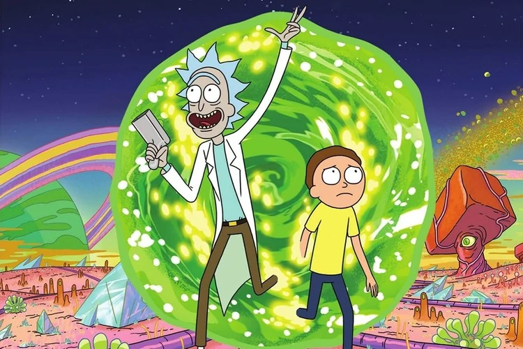

Motivos para assistir a Rick e Morty
1. O Primeiro Episódio de Rick e Morty
2. Gatilhos para repensar a sua vida — sim, com uma animação 2D
3. Desenvolvimento dos Personagens
4. Ficção Científica ou Realidade
5. A Continuidade em Rick e Morty
6. O Sentimentalismo em Rick and Morty
7. As Referências de Rick and Morty